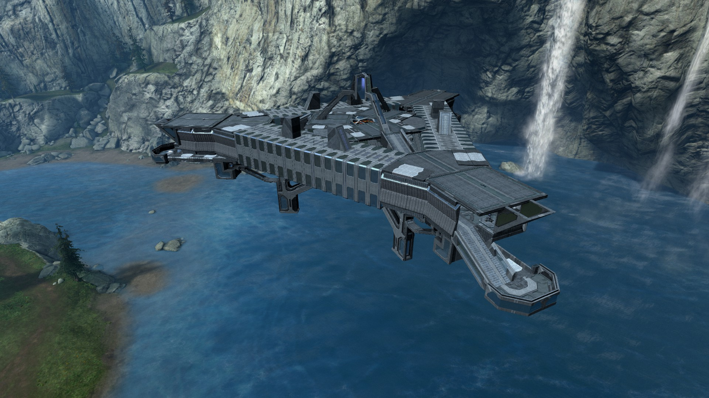
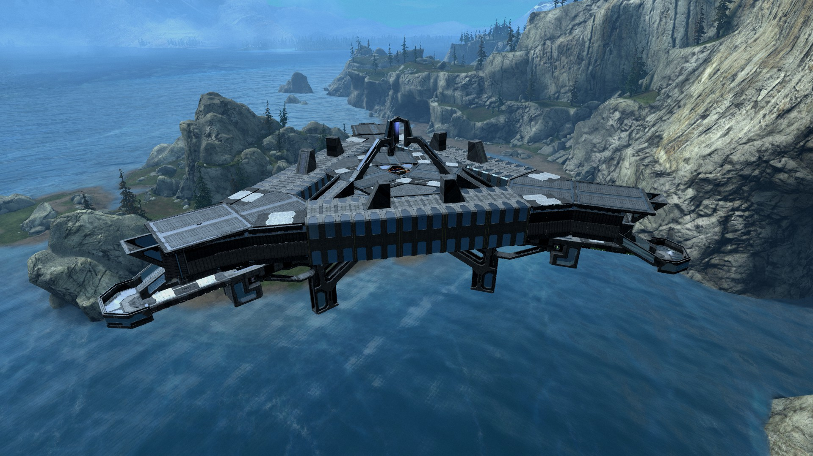
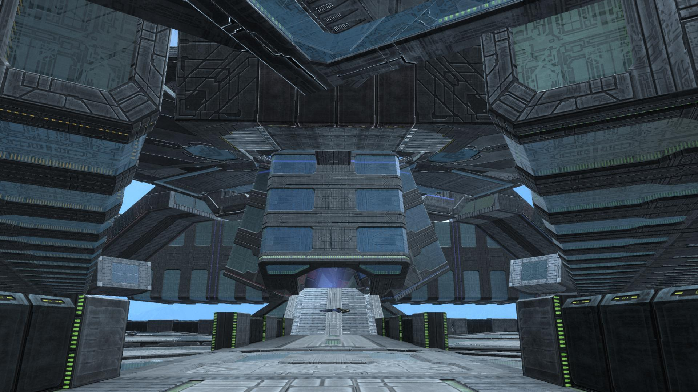
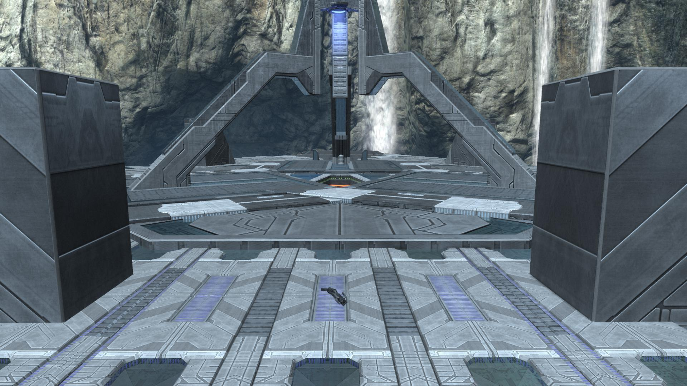
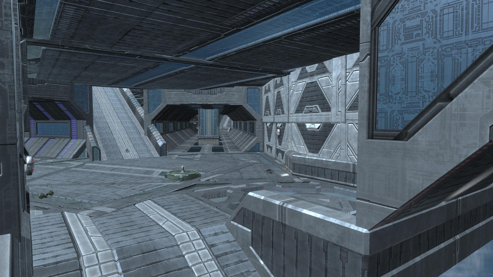

Mining Laser
-

One angle of the exterior of the map from "red base". -

Another angle of the exterior of the map with the corridor from "red base" to "neutral base" in the foreground. -

A view from the neutral bottom floor catwalk into the central "elevator" that allows for quick traversal from the bottom to the top floor. -

A view from above the corridor between the "red" and "blue" bases towards the central "elevator". -

A view of the interior of the "red base". There are two other nearly identical bases at each of the triangle's points.